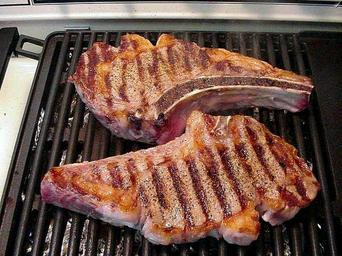

Home
T-Bone Steak

Descripton
This T-Bone steak is a juicy, delicious steak grilled to a perfect medium with a pink center.
You can add whatever seasoning you like before grilling. I usally just use salt and pepper.
Ingredients
- 12oz T-Bone steak
- Salt
- Pepper
- Any additional seasonings
Steps
- Preheat your grill on medium flame.
- Season one side of the steak with salt, pepper, and any additional seasonings you like.
- Place your steak on the grill seasoned side down.
- Season the other side of the steak after placing it on the grill.
- Grill for 5 to 7 minutes.
- Flip the steak and grill for another 5 to 7 minutes.
- Check it is done to your preferences.
- Plate your steak with any sides you like.